about

Loading...
projects
TicketRebel
[ 2024 - Present ]
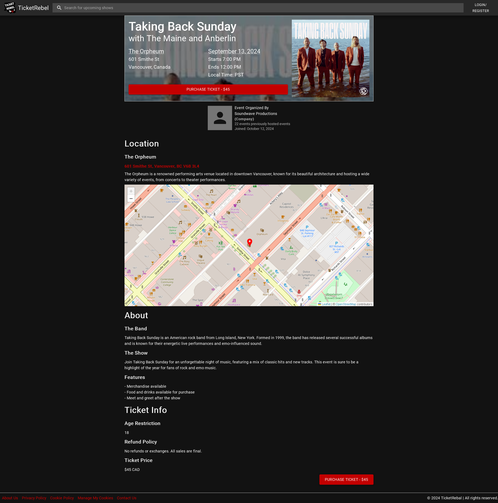
I am currently devloping a concert ticketing website, focused on local, small-scale events, with
emphasis on concerts.
Ticketrebel is currently a two-man team consisting of myself, as a full-stack developer, and A.J., as a database-focused backend developer.
Made in React as a (presently) web-only service, using
Material UI for UI/UX,
Koa for content routing,
AJV for data validation,
Swagger/OAS3 for API design,
Stripe for payments, and
PostgreSQL through pg/node-postgres for account and event data storage.
Ticketrebel is currently a two-man team consisting of myself, as a full-stack developer, and A.J., as a database-focused backend developer.
Made in React as a (presently) web-only service, using
Material UI for UI/UX,
Koa for content routing,
AJV for data validation,
Swagger/OAS3 for API design,
Stripe for payments, and
PostgreSQL through pg/node-postgres for account and event data storage.
Last Minute Massage
[ 2021-2023 ]
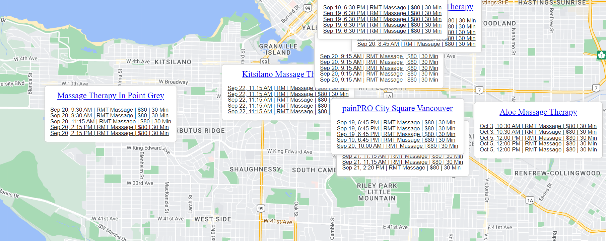
This was one of my first big projects - it was a website that displayed an interactive
Google
Maps API-based page populated with massage parlors, and their available services/time slots,
obtained using a combination of Selenium
webscraping and JaneApp API calls.
Please note that this screenshot is from an alpha build of the project, due to the
website
being shut down and there being no screenshots of the release version.
photography
 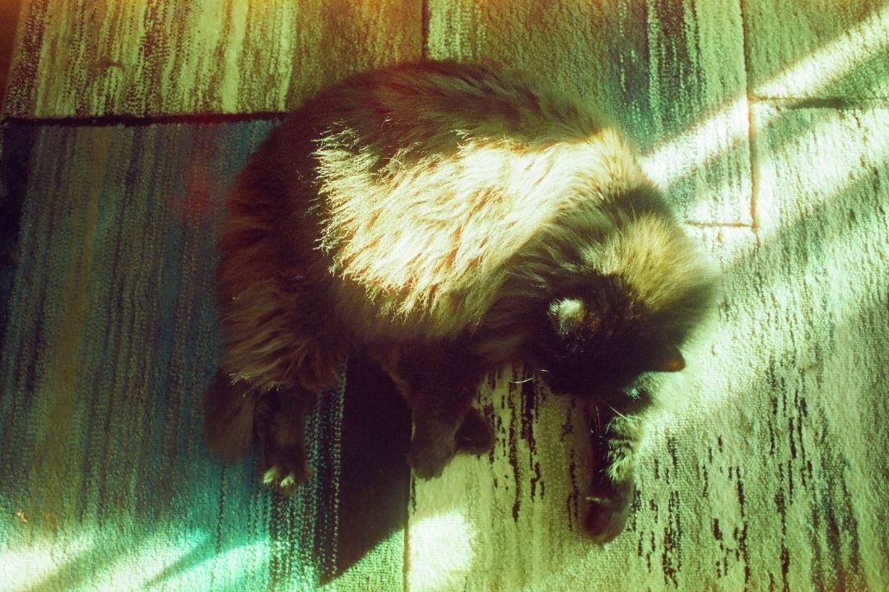
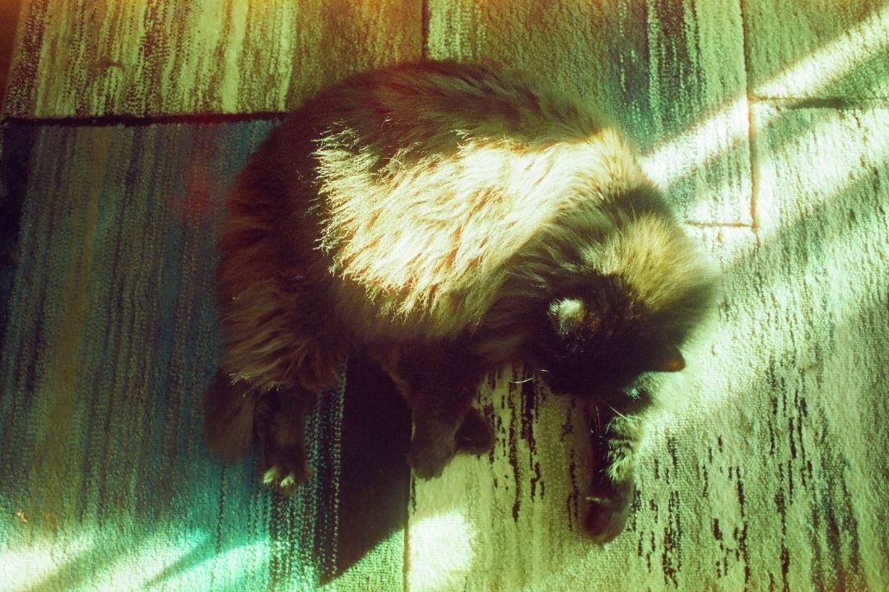
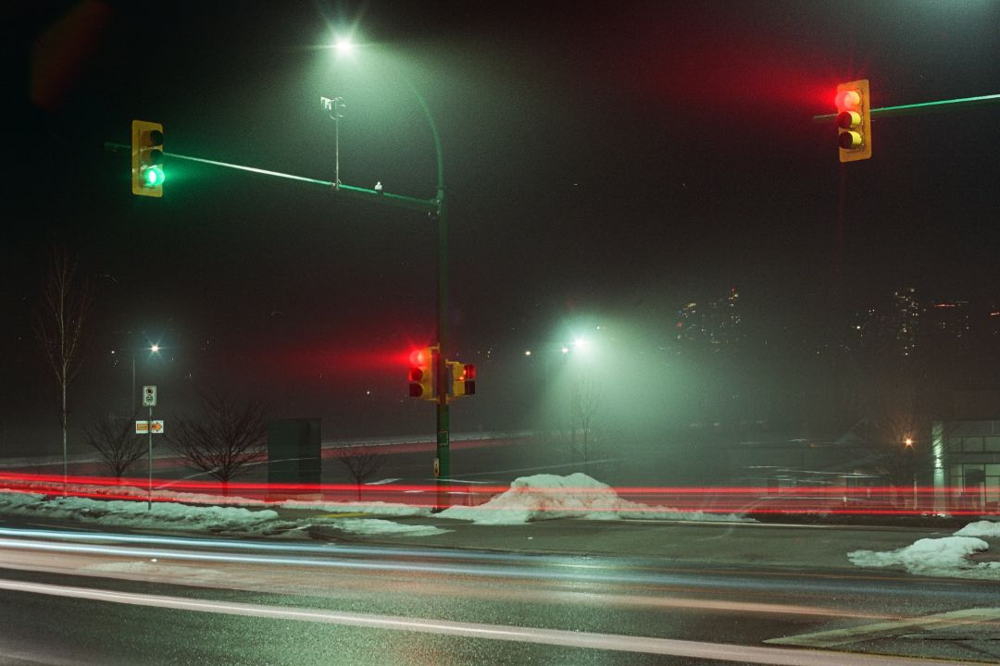
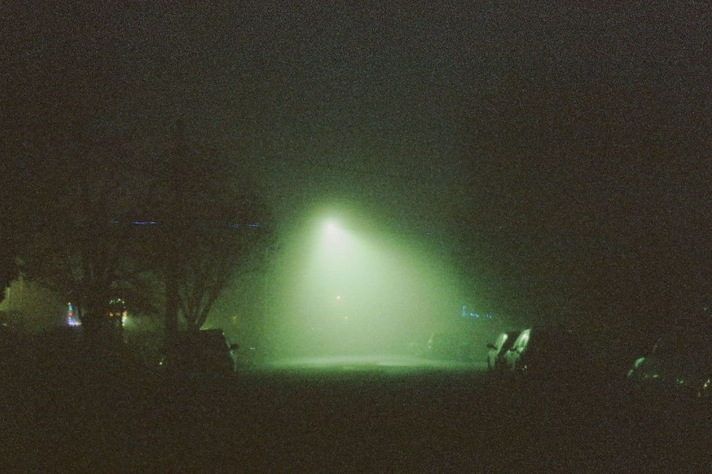
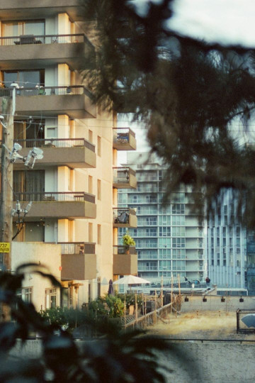
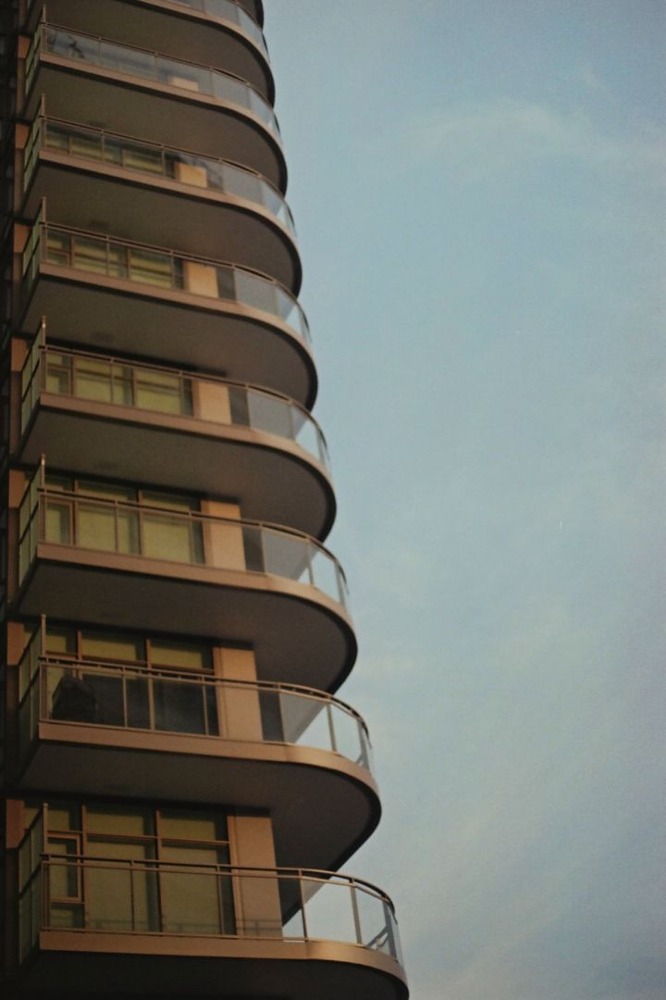
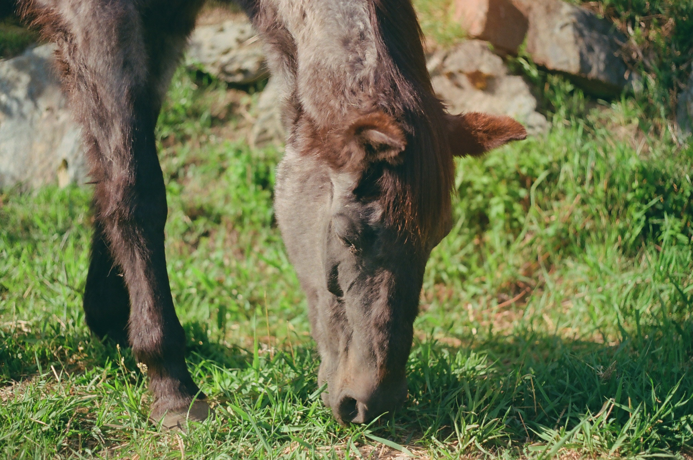
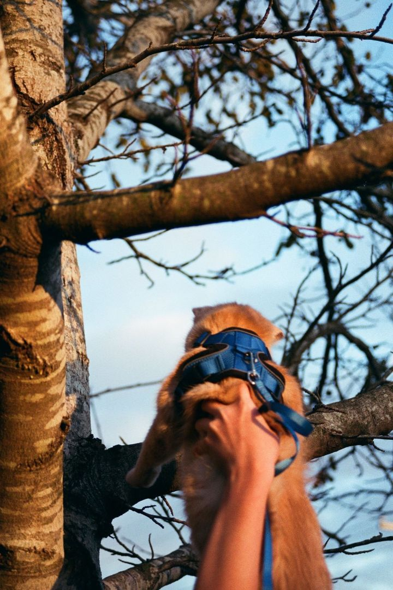
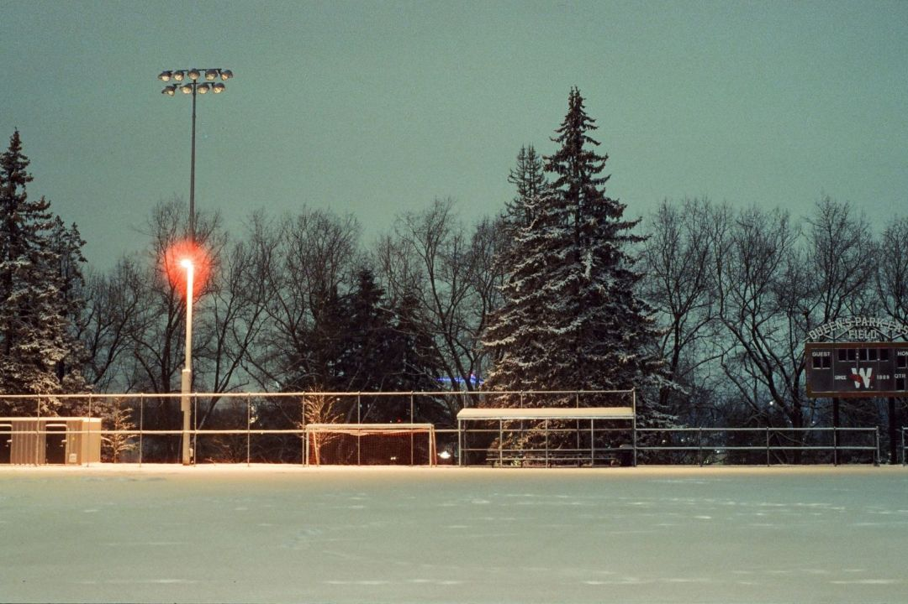
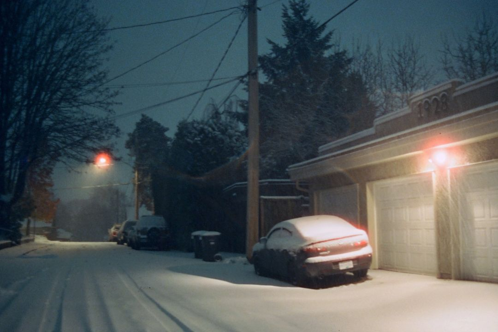
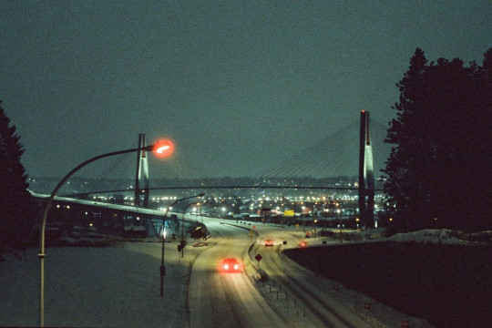

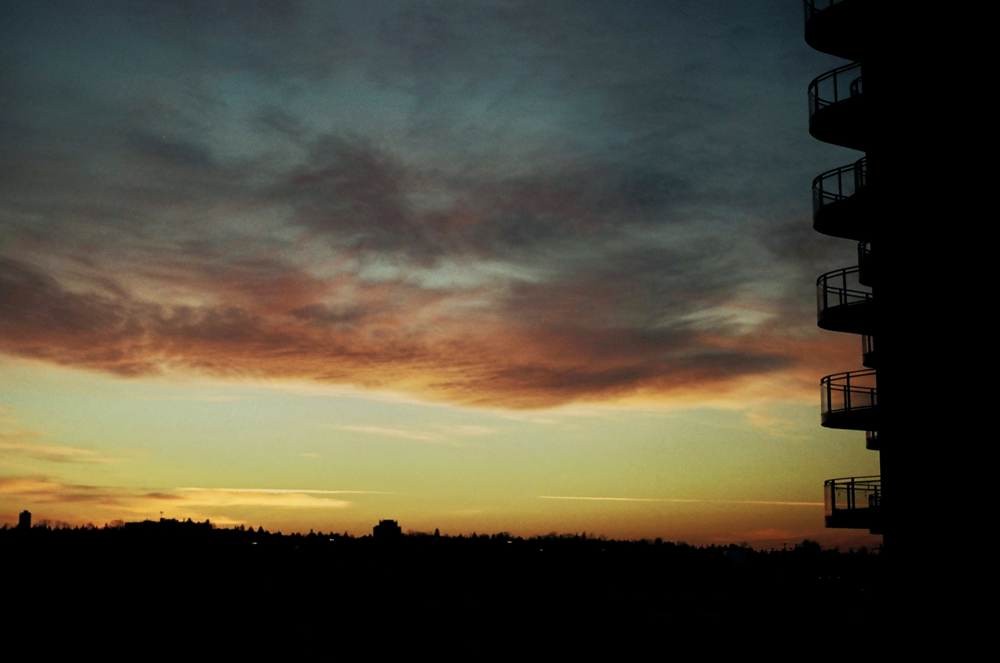
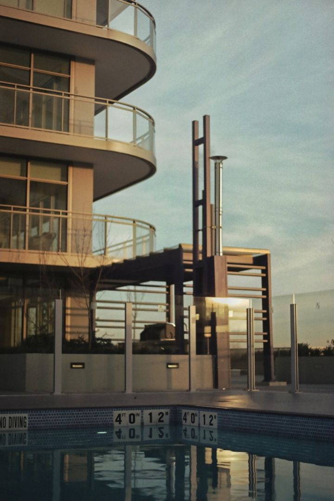
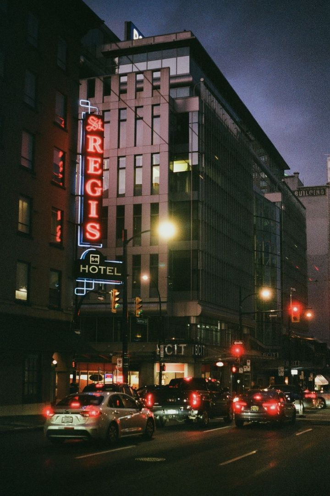
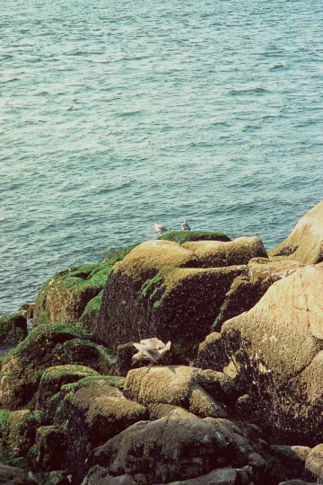